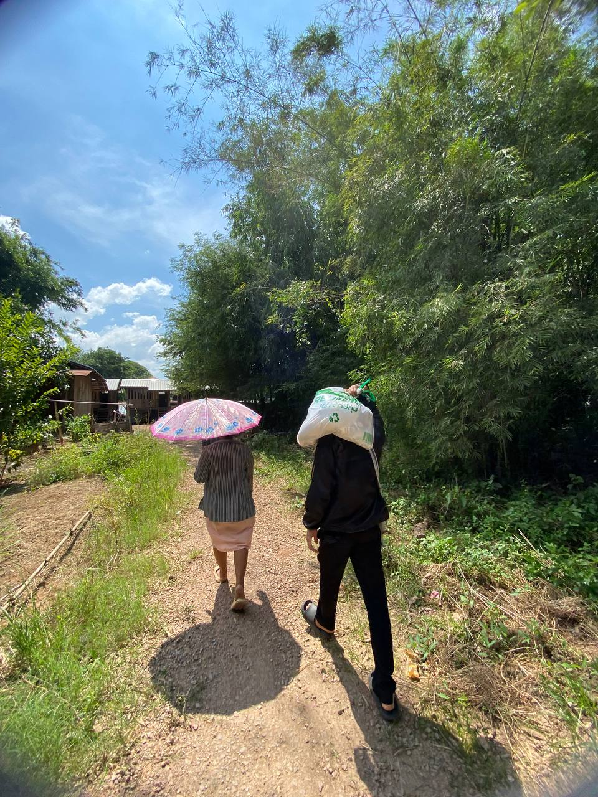
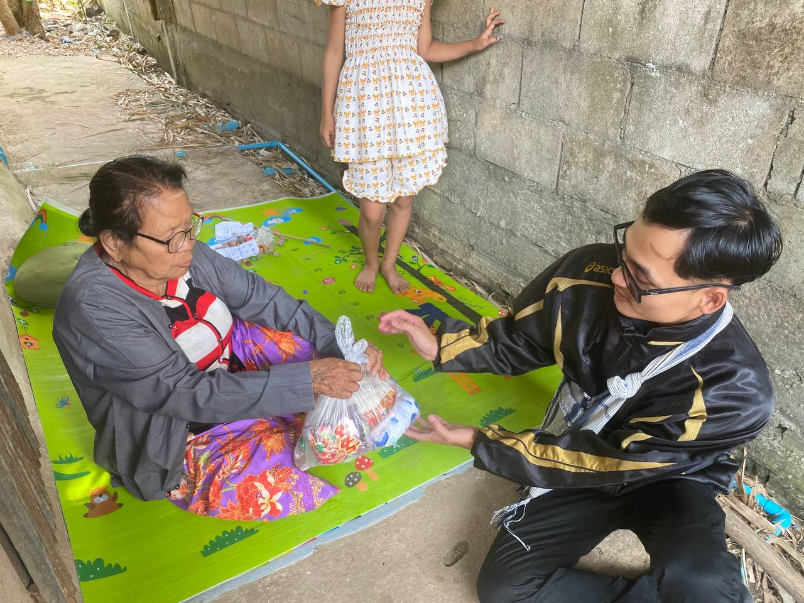
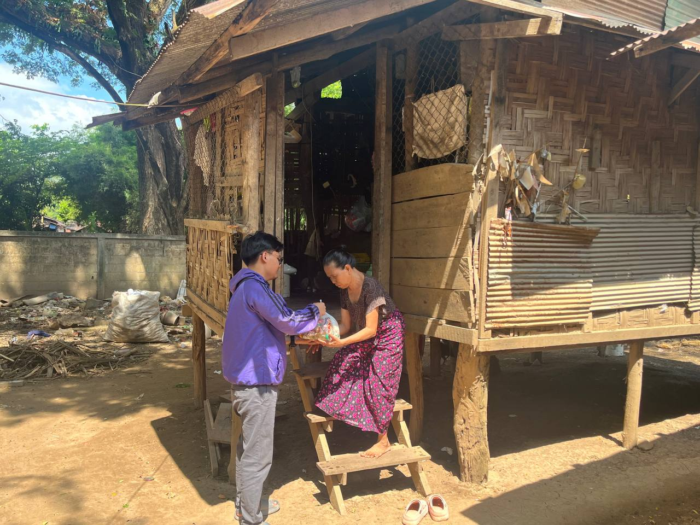
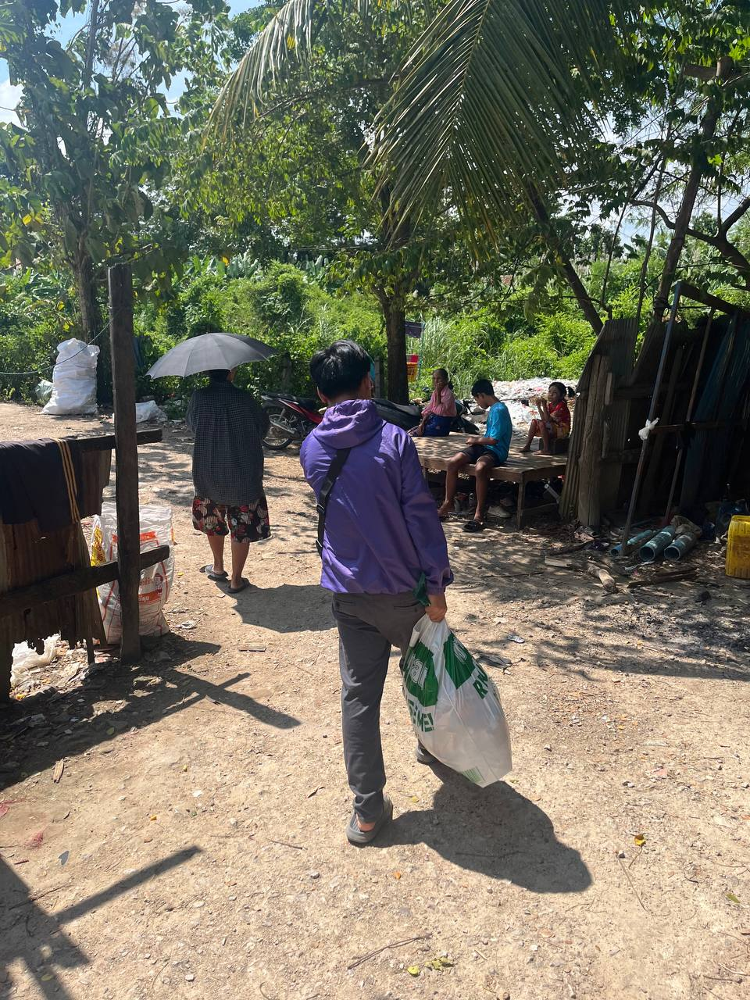
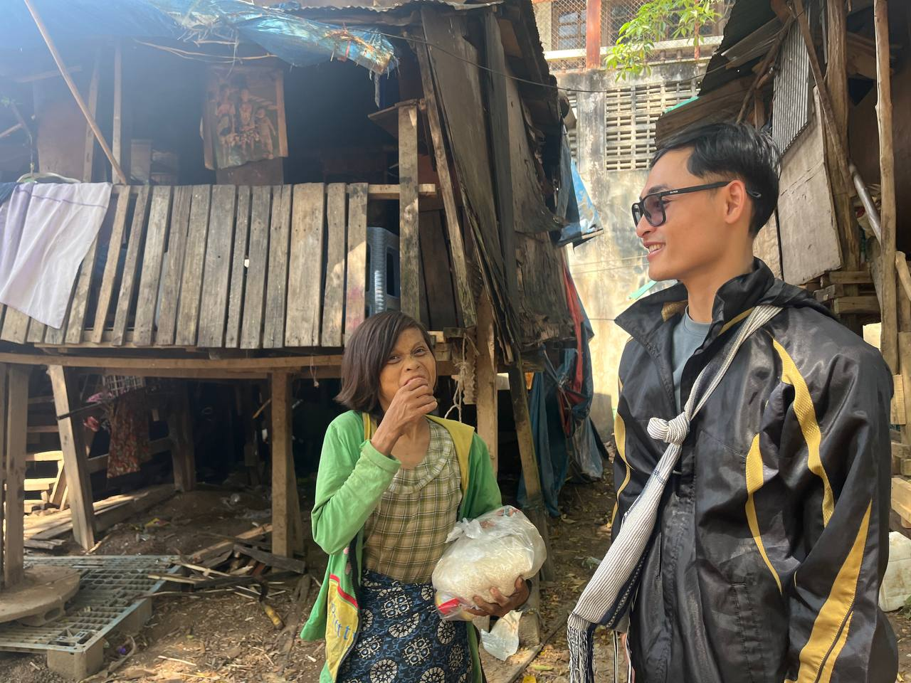
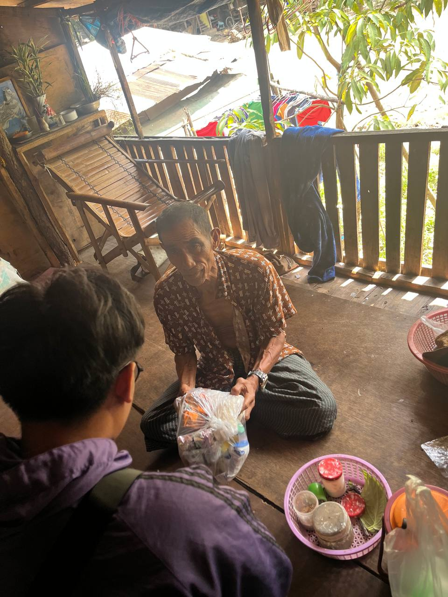

October · Mae Sot, Thailand
October food run
For our October food run in Mae Sot, we weighed rice, packed it with other food supplies, and carried the packs through the community. These photos follow the run from preparing the bags to sharing them with neighbors at their homes.
Packing the food supplies

On the Ground in Mae Sot












Help fund the next food run
Every gift, from ฿1, goes toward rice, cooking oil, and other essentials.